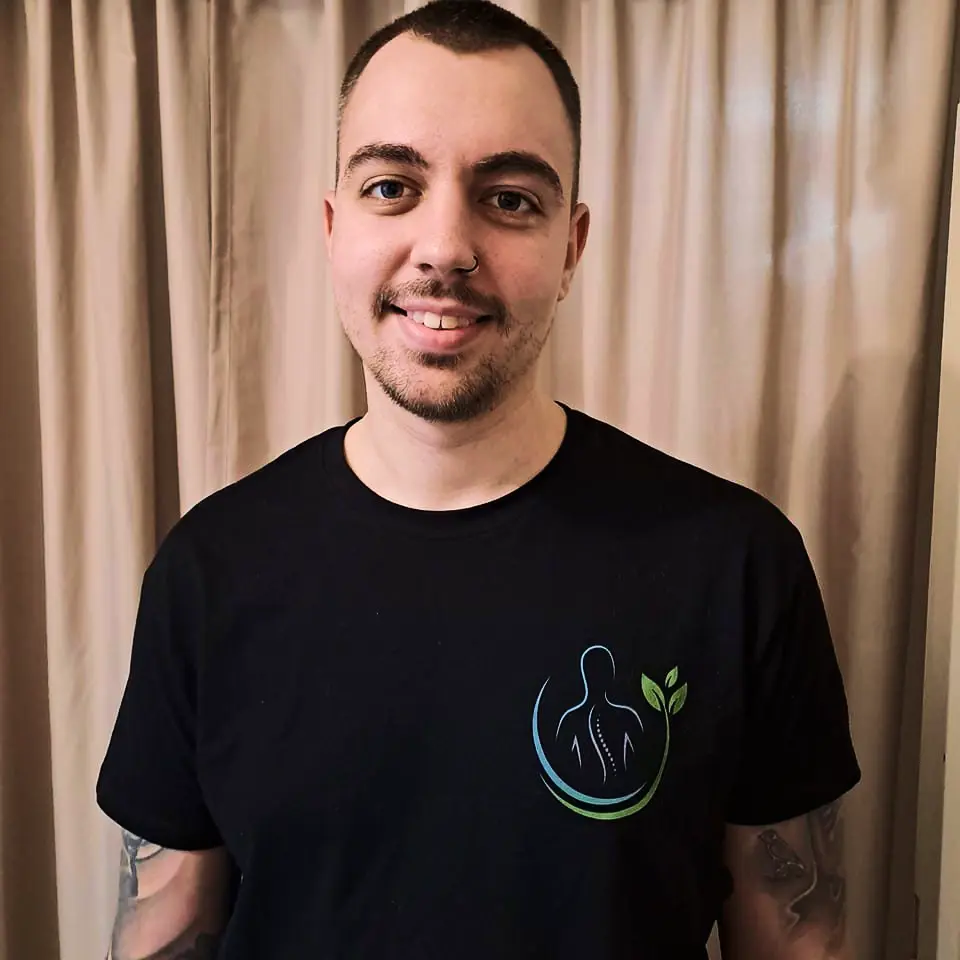

Régóta fennálló mozgásszervi problémája van?
Szakképzett Csontkovács módszerem segít helyreállítani az ízületek és izmok egyensúlyát, fájdalommentesen és természetes módon. Speciális technikáim azonnali megkönnyebbülést nyújtanak, legyen szó gerincproblémákról, izomfeszültségről vagy egyéb mozgásszervi panaszokról. Foglaljon időpontot online, és kezdje meg gyógyulását Budapesten!
Tudjon meg többet IdőpontfoglalásDerék vagy hátfájdalmaktól szenved?
Szakképzett csontkovács segítségével fájdalommentesen, természetes úton állítjuk helyre gerince egészségét! Speciális kezeléseink gyors megkönnyebbülést hoznak azoknak, akik mozgásszervi problémákkal küzdenek. Lépjen a fájdalommentes élet útjára még ma! Foglaljon időpontot online tapasztalt csontkovácsunkhoz, Budapesten.
Tudjon meg többet IdőpontfoglalásFájdalom kínozza a hátában, vállában, vagy a derekában?
Kombinált kezelési módszerem természetes úton állítja helyre gerince és ízületei egészségét! A csontkovácsolás hatékonyan enyhíti mozgásszervi panaszait, míg a köpöly terápia serkenti a vérkeringést és lazítja az izmokat. Ezzel a kombinált kezeléssel gyorsan visszanyerheti mozgásszabadságát. Foglaljon időpontot online, és tapasztalja meg a csontkovácsolás és köpöly terápia jótékony hatásait Budapesten!
Tudjon meg többet Időpontfoglalás
Bemutatkozás
Est 2021
Rólam
Csonka Bence vagyok Mozgásterapeuta, Csontkovács és Masszőr.2021 óta foglalkozom mozgásszervi problémákkal, és azóta több ezer sikeres kezelést végeztem, hozzájárulva vendégeim egészségéhez és jólétéhez. A kezeléseim során az Érmelléki Módszer és Pap Miklós által oktatott csontkovácsolási technikák mellett a saját, tapasztalataim alapján kialakított módszeremet is alkalmazom, hogy a lehető leghatékonyabban segítsek a hozzám fordulóknak.
- Gépi mélyizom lazítás
- Speciális izom mobilizáció
- Precíz ízületmozgás a szimmetria helyreállításáért
- Köpöly terápia
A mozgás és a test harmóniája mindig is fontos szerepet játszott az életemben. Hosszú évek óta jógázom és sárkány kungfut gyakorlok, amelyek lehetővé tették számomra a test működésének és a mozgás összetettségének mélyebb megértését.
Célom, hogy Önnek is fájdalommentes életet biztosítsak személyre szabott csontkovács kezelésem segítségével. Egyedi kezelési tervet dolgozok ki, amely modern technikák alkalmazásával segít a hátfájdalom, derékfájdalom, nyakfájdalom, gerincproblémák, valamint sport- és sérülés utáni rehabilitáció terén.
Különösen hatékony módszer a köpölyözés, amely javítja a vérkeringést, csökkenti az izomfeszültséget, támogatja a méregtelenítést és elősegíti a gyorsabb gyógyulást. Bízzon szakértelmemben, és tapasztalja meg a fájdalommentes mozgás örömét!
Szolgáltatások
Csontkovács Szolgáltatások – Fájdalommentes Kezelés és Gyors Időpontfoglalás
Szakképzett Csontkovács Szolgáltatások - Fájdalommentes Megoldások Hát-, Nyak-,Láb- és Gerincproblémákra
Hátfájdalom kezelése
Hatékony megoldás hátfájdalom ellen, javítjuk a gerinc mozgását és enyhítjük a fájdalmat. Csontkovács kezelés, amely gyors enyhülést hoz.
Derékfájdalom kezelése
Derékfájdalom kezelése célzott csontkovács módszerekkel, gyors fájdalomcsillapítás és mobilitás visszaállítás. Akut és krónikus derékpanaszokra.
Nyakfájdalom kezelése
Nyakfájdalom enyhítése csontkovács kezeléssel, stressz és helytelen testtartás okozta problémákra. Javulás már az első alkalom után.
Gerincproblémák kezelése
Gerincproblémák, mint a gerincsérv kezelése. Csontkovács kezelés, amely természetes módon segít a fájdalom enyhítésében és a testtartás javításában.
Sport- és sérülés utáni rehabilitáció
Sport- és sérülés utáni gyors rehabilitáció csontkovács kezelésekkel. Csökkentjük a fájdalmat és javítjuk a mozgást, hogy visszatérhess a sporthoz.
Testtartás javítás
Helytelen testtartás okozta fájdalmak kezelése. Személyre szabott csontkovács módszerem segíthet a testtartás javításában és a gerinc egyensúlyának helyreállításában.
Foglaljon csontkovács időpontot gyorsan és egyszerűen!
Fájdalommentes életre vágyik? Válassza személyre szabott csontkovács módszeremet, és foglaljon időpontot online néhány egyszerű lépésben! Gyors és kényelmes időpontfoglalás, azonnali visszaigazolással.
FoglalásÁraink
Csontkovács Kezelések és Időpontfoglalás – Fájdalommentes Megoldások
Fedezze fel kedvező árajánlataimat, és tapasztalja meg a szakképzett csontkovács kezelés előnyeit!
Személyre Szabott Kombinált Terápia
24000 / óra
A test minden ízületét precíz,fájdalommentes technikával mozgásba hozzuk,hogy helyreálljon a szimmetria, csökkenjen a fájdalom és könnyedebbé váljon a mozgás. A kezelés végén köpölyterápia fokozza a keringést ...
IdőpontfoglalásSzemélyre Szabott Mozgásterápia
23000 / 40 perc
Ez a kezelés kiváló alternatíva azok számára, akik tartanak a köpölyözéstől, vagy akiknél nem ajánlott a használata. A test teljes ízületi rendszerét egy precíz, fájdalommentes technikával mozgatjuk át...
IdőpontfoglalásGyakran előforduló kérdések
Csontkovács Kezelések és Időpontfoglalás – Gyakran előforduló kérdések
Csontkovács Kezelések, Árak és Szolgáltatások
Fájdalmas a csontkovács kezelés?
A csontkovács kezelés általában nem fájdalmas, sőt sok páciens azonnali megkönnyebbülést érez. A kezelések során finom, precíz mozdulatokkal állítják helyre az ízületeket és a gerincet, ami inkább komfortérzetet és a mozgás javulását eredményezi. Ha fájdalmat tapasztalnál, az általában csak átmeneti, és a test alkalmazkodását jelzi a kezeléshez.
Mennyi időt vesz igénybe egy csontkovács kezelés?
Egy csontkovács kezelés általában 30–60 percet vesz igénybe, a probléma súlyosságától és a páciens állapotától függően. A kezelések célja a fájdalom csökkentése és a mozgás helyreállítása. Már az első alkalommal is érezhetsz javulást, de a hosszú távú eredményekhez több kezelés is szükséges lehet, attól függően, milyen régóta áll fenn a probléma.
Milyen problémákat kezel egy csontkovács?
A csontkovács főként hát-, derék- és nyakfájdalmak kezelésére specializálódik, de segíthet gerincsérv, isiász, fejfájás, ízületi problémák és testtartásbeli problémák esetén is. Ezen kívül javíthatja a mozgás szabadságát, enyhítheti az izomfeszültséget és hozzájárulhat a krónikus fájdalmak csökkentéséhez. A csontkovácsolás természetes módon segít helyreállítani a test egyensúlyát.
Mi az a csontkovácsolás, és hogyan segíthet nekem?
A csontkovácsolás egy olyan speciális kezelés, amely a gerinc és az ízületek helyreállításával segíti a test természetes működését. A cél a mozgékonyság javítása és a fájdalom csökkentése. Ha hát-, nyak-, derék- vagy ízületi problémákkal küzd, a csontkovács segíthet a fájdalommentes élet elérésében.
Mire számíthatok egy csontkovács kezelés után?
A kezelés után előfordulhat izomláz vagy átmeneti fájdalomerősödés, mivel a test a hosszú ideje megszokott helytelen pozícióból lett kimozdítva. Ezek a tünetek általában 3-6 napig tartanak, majd fokozatosan enyhülnek, és az eredeti fájdalmak is szinte teljesen megszűnhetnek. Az, hogy mikor érezhető teljes javulás, attól függ, mennyire régóta és milyen súlyos mozgásszervi problémák állnak fenn.
Hányszor kell csontkovácshoz mennem,hogy érezzem a javulást?
Sok páciens már az első csontkovács kezelést követően jelentős javulást érez. Azonban a tartós eredmény érdekében gyakran több alkalomra van szükség. Általában 3–6 kezelés elegendő a legtöbb mozgásszervi probléma enyhítésére, de krónikus esetekben több kezelés is szükséges lehet a fájdalommentes élet eléréséhez.
Vendégértékelések
Csontkovács Értékelések a Google oldalán
Olvassa el, mit mondanak a kezelésemről!
Kapcsolat
Foglaljon időpontot fájdalommentes csontkovács kezelésre!
Az alábbi kényelmesen foglalhat időpontot online bármilyen eszközön keresztül!Amennyiben nem talál megfelelő időpontot, akkor kérem nyugodtan hívjon,írjon!